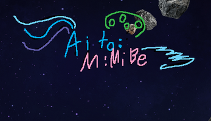
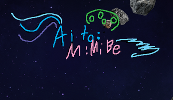
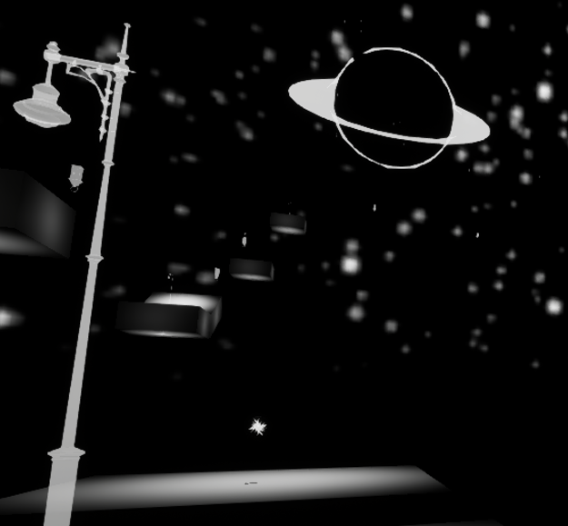

An asteroids clone made in GameMaker.
The first Game I made in an engine.
An asteroids clone made in GameMaker.
The first Game I made in an engine.
This is a space game made in UE5 for an assignment.
It was built entirely using blueprints.
Left Panel Contains Engine Projects, Right Panel Contains SFML Projects.
A basic platformer made entirely using sfml. Visual assets were created by me, and audio assets are sourced from freesound.org under CC0 licensing.
This is the first non text-based game that doesn't use an engine.

A basic paint tool that supports a number of features similar to microsoft paint
This tool was made in order to familiarize myself with the sfml syntax.